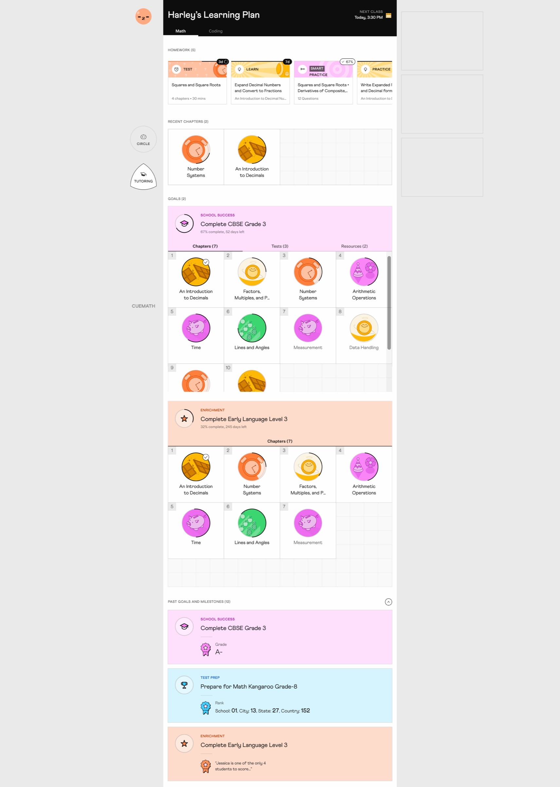
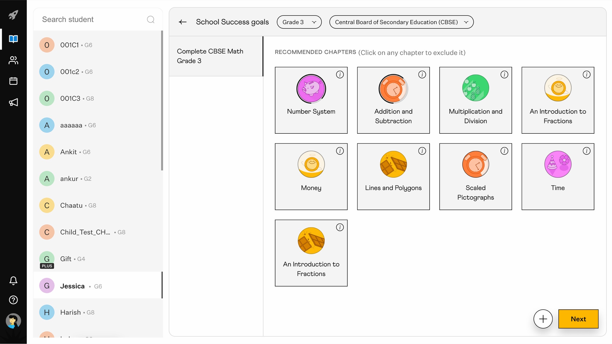
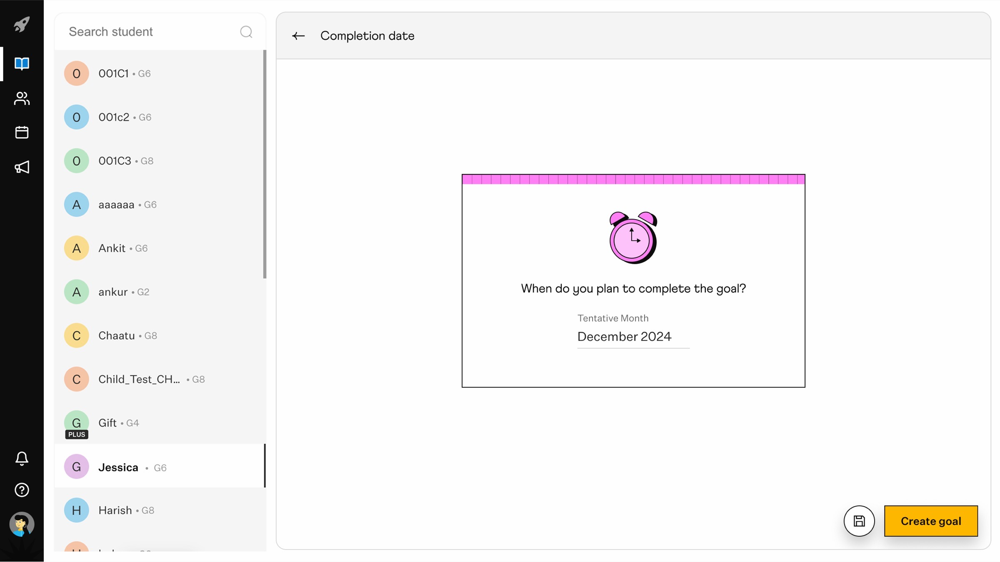
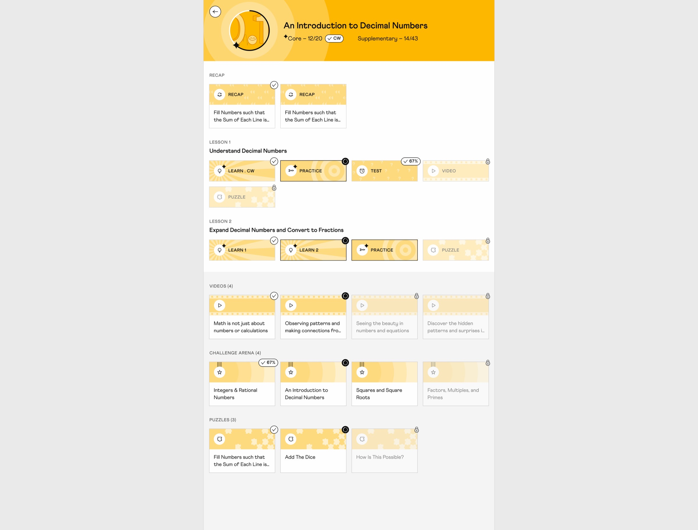

The Problem
Cuemath's learning system locked tutors into per-curriculum programs and buried homework two layers deep — workarounds broke progress tracking and students missed assignments.
The system had grown across CBSE, ICSE, and Common Core math, each a locked program with its own chapter structure. A tutor who needed Grade 5 concepts plus Grade 4 foundations had to assign two whole programs side by side. Tracking which chapter belonged to which program, what had homework, and how progress added up became unreliable.
Homework had the same problem at a smaller scale. It lived inside chapters, buried two layers deep. Extra practice and advanced worksheets got lost at the bottom of the chapter page; students scrolled past them or missed the due date. Tutors had to dig into lessons one by one to check who'd done what.
Role
I owned design for the Learning System Architecture end-to-end — Cuemath's chapter structure and goal-creation flow, shipped across three math curricula in 4 weeks.
- End-to-end UX/UI — goal creation flow, learning homepage, chapter system, homework queue
- System design — three-level hierarchy (Chapter → Block → Node), node states, progress source of truth, in-class vs anywhere routing
- Cross-curriculum architecture — one structure that absorbed 15+ existing sheet types across CBSE, ICSE, and Common Core
- Cross-functional collaboration — PM (scope), Engineering (data migration), Curriculum (Test Prep pre-mapping), Illustrator + Motion (visual + interaction language)
Decisions
The architecture had to absorb 15+ existing sheet types without breaking the migration, give tutors composable goals across curricula, and ship in 4 weeks. Four decisions held it together.
Decision 1 — Three-level hierarchy that absorbed 15+ sheet types
The system had 15+ node and sheet types (Learn, Practice, Smart Practice, Video, Challenge Arena, Test, Puzzle, Recap, Custom Test, and more), each categorized differently by subject. We couldn't drop the old data during migration; the architecture had to absorb it, not replace it.
I designed Chapter → Block → Node. Two block types covered every existing sheet: Lessons (mandatory, count toward progress) and Resources (optional enrichment). New concepts like Competition Arena dropped in as resource blocks without forking the system.

Chapter → Block → Node. Two block types absorbed all 15+ existing sheet types.
Decision 2 — Three goal types, ordered the way tutors think
Tutors needed to mix chapters across curricula. I built three goal types (School Success for academic prep, Test Prep for competitive exams, Enrichment for skill-building) and a flow that matched how tutors framed the conversation: goal type → grade and curriculum → chapters → timeline. Reversed orders failed in early tests.
The curriculum team pre-mapped Test Prep chapters to specific exams so tutors didn't start from scratch. Auto-importing school curriculums was scoped out — tech and timeline.



Goal creation flow: type → grade and curriculum → chapters → timeline.
Decision 3 — Anchor progress to admin location, give teachers flexibility on top
Teachers needed to move nodes between in-class and anywhere — live sessions pace differently than self-study. But the curriculum needed a reliable read of what was actually taught. Progress counts from the admin's official location; teachers can move nodes for a session without breaking tracking.
Both sides got what they needed: tutors kept their pacing flexibility, the curriculum kept its source of truth.
Decision 4 — Surface homework first, cap the queue at 10
Homework was buried two layers deep before — students missed it, tutors couldn't tell who'd started. I moved it to the top of the homepage with 7-day due-date progression (Day 1–4 normal, Day 5–6 warning, Day 7 overdue). Recent chapters sat below as quick navigation, goals at the bottom for the full picture.
Three sources fed the queue: auto-generated practice, teacher-assigned lessons, and system smart-practice. Showing everything overwhelmed students; capping at 5 under-served the ones who could handle more. We landed on 10 visible, overflow queued and hidden — it surfaces as load clears. Teachers see the full queue.

Homepage: homework queue on top, recent chapters mid, goals at the bottom.
Impact
Students reached
28–30k
students across CBSE, ICSE, and Common Core. Goal creation became every student's first onboarding step.
Goal types adopted
3 / 3
School Success, Test Prep, Enrichment — all three picked up by tutors.
Sheet types unified
15+ → 3
Every existing type absorbed into Chapter → Block → Node.
Curricula supported
3
CBSE, ICSE, Common Core — one architecture across all of them.
Shipped in 4 weeks. Tutors compose paths from individual chapters across curricula — pre-built program bundles are no longer the default. Milestones and achievements (exams passed, medals, competitions) were de-scoped to a follow-on phase.
Lessons
Tutors' workarounds were the spec for what to build next
Before goals existed, tutors couldn't mix chapters across CBSE and ICSE — so they stacked entire programs side by side and ignored the parts they didn't need. The system technically allowed it; it just broke tracking. The workaround wasn't a bug to fix — it was the unmet need to design for.
Absorb the old structure; don't replace it
I started thinking we'd drop the 15+ sheet types and replace them with a clean three-level model. Engineering pushed back — the migration couldn't break. The architecture had to wrap the old data into Lessons and Resources blocks, not overwrite it. The constraint produced a more durable system than the clean-slate version would have.
Ship the independent piece first to keep the team learning
Goal creation could run on the existing system. The chapter rebuild couldn't. Shipping goals first meant tutors started composing custom paths weeks before the architecture was ready — and their behavior fed the system design underneath. The dependency order was the learning order.